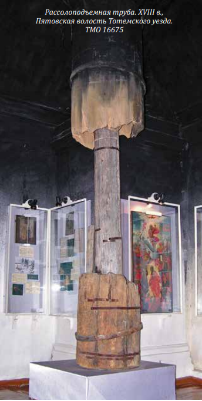

Солеварение — один из древнейших промыслов на территории края. Он зародился, предположительно, в XIII в. В период средневековья соль являлась одним из основных и самых ценных местных товаров.
Особенностью тотемских соляных источников было достаточно глубокое залегание, поэтому бурить скважины приходилось на значительную глубину — до 100 метров и более. Именно в Тотьме было составлено первое технологическое руководство по бурению скважин «Роспись о том, как зачать делать новые трубы на новом месте», датированное XVII в. и принадлежащее перу тотьмича Семёна Саблина. Соляной раствор, добываемый из недр земли, выпаривали в специально устроенных варницах — сковородах-цренах. На изготовление обыкновенного црена уходило до 400 кованых листов-полиц и до 6 тысяч заклёпочных гвоздей. Именно в этой сковороде и происходил процесс выпаривания соли.

Промысел существовал до конца ХIХ в., Кокорев и Раков в 1882 г. даже награждались бронзовой медалью за выварку хорошей соли при дешевой цене, а также за опыты добывания глауберовой соли из отбросов соляного производства. Но вскоре соляной завод в Тотьме закрылся, поскольку местную соль с рынка вытеснил более дешевый продукт – привозная соль, которая добывалась открытым способом. Соляные источники для пищевых целей возобновлялись дважды: в годы Гражданской и Великой Отечественной войн